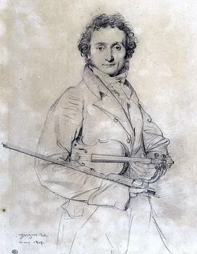

Наследие и значениеНикколо Паганини оставил глубокий след в истории мировой музыкальной культуры. Он показал, что скрипка способна передавать лирические чувства, энергию, драматизм и виртуозный блеск. Его 24 каприса до сих пор входят в репертуар профессиональных скрипачей и используются в музыкальном образовании. Скрипичные концерты и другие сочинения Паганини регулярно исполняются в концертных залах по всему миру, продолжая восхищать слушателей своей выразительностью и сложностью. Его имя стало символом выдающегося музыкального таланта и виртуозного мастерства. Многие исполнители и композиторы вдохновлялись его творчеством. Никколо Паганини навсегда остался одним из самых ярких и влиятельных музыкантов XIX века. Его произведения и сегодня занимают важное место в мировой музыкальной культуре. Наследие Паганини продолжает жить в каждом исполнении его произведений Никколо Паганини (1782–1840) |
|
 Музыкальное наследие великого скрипача |